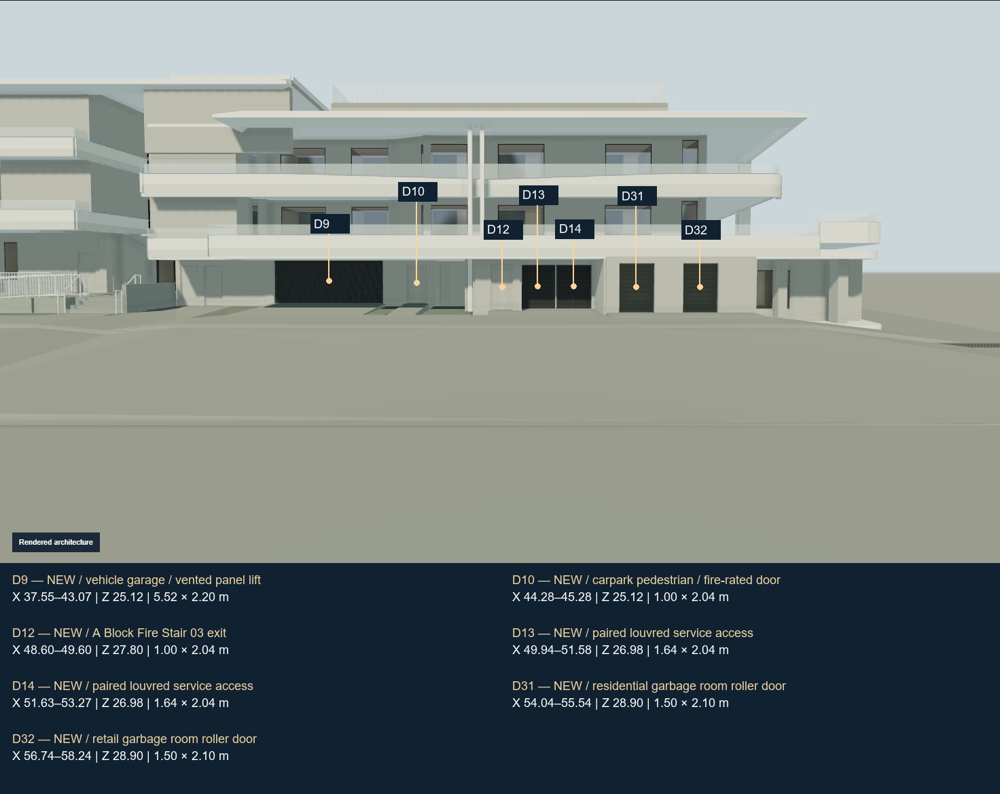
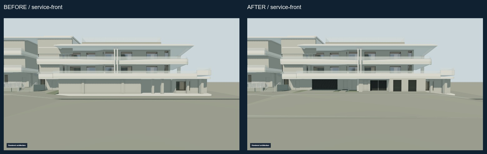
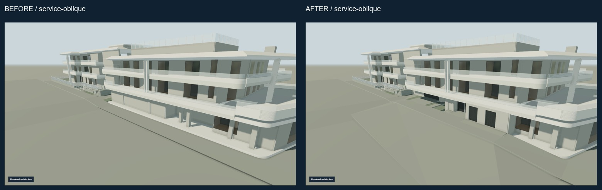
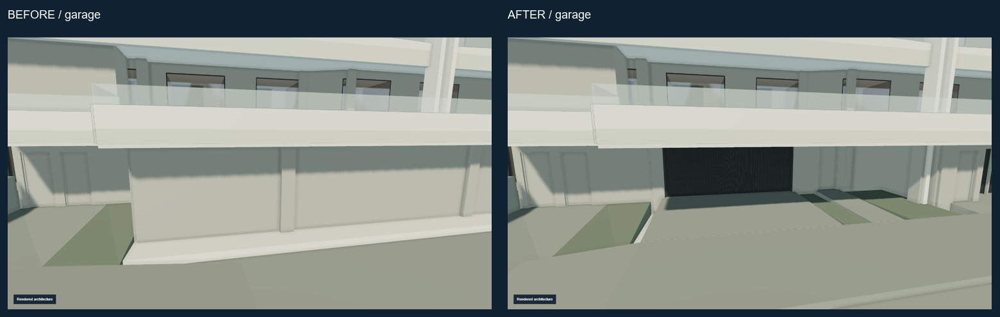
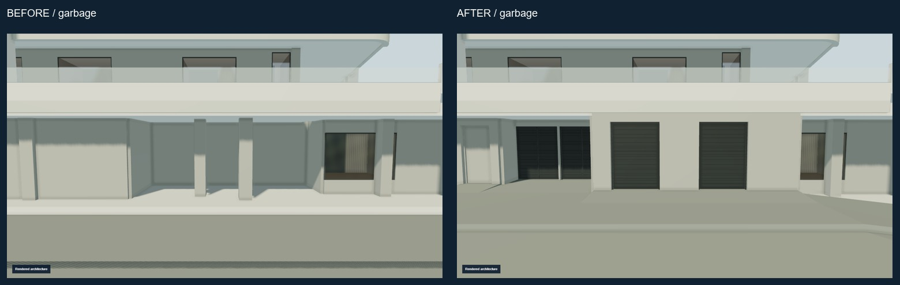
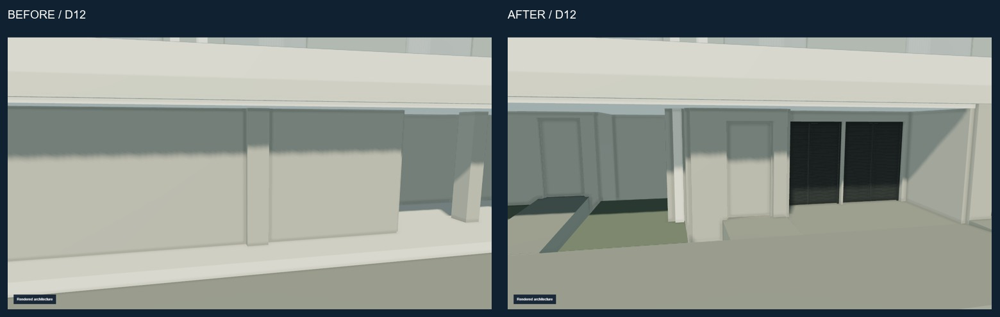
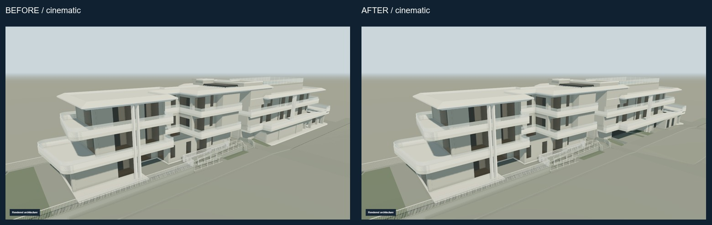
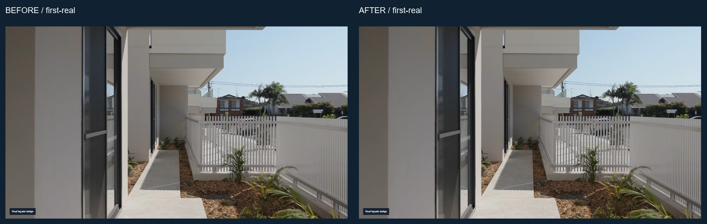

ANNA ATHINA · SERVICE-FRONTAGE-SUCCESSOR · 2026-09-26
Latest architectural review.
D9 vehicle panel-lift, D10 pedestrian door, D12 A stair exit, D13/D14 service access, and D31/D32 bin shutters. The approved ramp, construction journey and cinematic handover are preserved.
Temporary public human-review copy. Not the production Raysons website. Source drawings and original site photographs are deliberately excluded.










